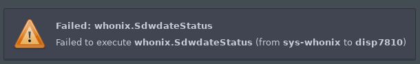

An error messages like the one above pops up right after I shut down whonix-ws-16-dvm based disposable qube. It’s annoying and may scare some novice users.
Reproducing
- Be on update Qubes 4.1
- start whonix-ws-16-based qube
- Shut it down
If the timing is right it will show that error message. If it doesn’t just try again.
Qrexec policy logs
When running in dom0 the command sudo journalctl -u qubes-qrexec-policy-daemon, I see the following logs:
Mar 03 10:38:51 dom0 qrexec-policy-daemon[2987]: qrexec: whonix.SdwdateStatus+: sys-whonix -> disp7810: allowed to disp7810
Mar 03 10:39:01 dom0 qrexec-policy-daemon[2987]: qrexec: whonix.SdwdateStatus+: sys-whonix -> disp7810: allowed to disp7810
Mar 03 10:39:11 dom0 qrexec-policy-daemon[2987]: qrexec: whonix.SdwdateStatus+: sys-whonix -> disp7810: allowed to disp7810
Mar 03 10:39:21 dom0 qrexec-policy-daemon[2987]: qrexec: whonix.SdwdateStatus+: sys-whonix -> disp7810: allowed to disp7810
Mar 03 10:39:24 dom0 qrexec-policy-daemon[157609]: 2022-03-03 10:39:24.619 qrexec-client[157609]: process_io.c:187:process_io: vchan connection closed early (fds: 4 11 -1, status: -1 -1)
Mar 03 10:39:27 dom0 qrexec-policy-daemon[2987]: qrexec: whonix.SdwdateStatus: sys-whonix -> disp7810: error while executing: Failed to start the target: <module 'qrexec.exc' from '/usr/lib/python3.8/site-packages/qrexec/exc.py'>